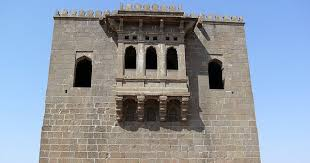
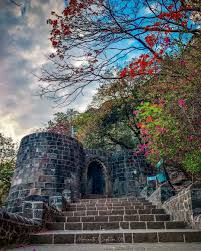
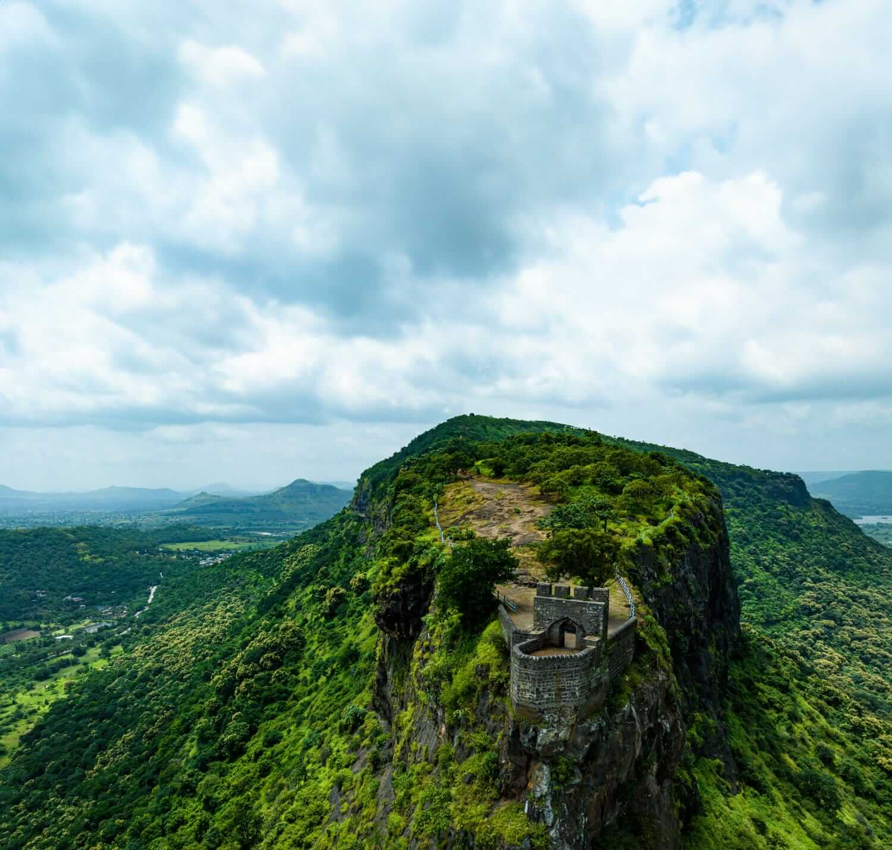
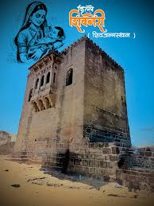

शिवनेरी किल्ला भारताच्या महाराष्ट्र राज्यातील एक प्रमुख किल्ला आहे तसेच हा किल्ला दुर्ग प्रकारातील किल्ला आहे. छत्रपती शिवाजी महाराजांचा जन्म १९ फेब्रुवारी १६३० या दिवशी शिवनेरी किल्ल्यावर झाला होता म्हणून या किल्ल्याला ऐतिहासिक महत्व आहे. छत्रपती शिवाजी महाराजांचे जन्मस्थान असलेला हा किल्ला पुण्यापासून ९८ किलोमीटर अंतरावर आहे. शिवनेरीचा हा प्राचीन किल्ला जुन्नर शहरापासून ४ किलोमीटरवर आहे. शिवनेरी किल्ला हा महाराष्ट्रातील राष्ट्रीय संरक्षित स्मारक म्हणून भारत सरकारने दि. २६ मे, इ.स. १९०९ रोजी घोषित केला होता. शिवनेरी किल्ला १७ व्या शतकात यादवांनी सुमारे ३५०० फूट उंच नाणेघाट डोंगरावर बांधला होता. हा किल्ला महादेवाच्या पिंडीच्या आकाराचा असून येथे शिवाई देवीचे मंदिर आणि जिजामाता तसेच शिवाजी नमहाराजांच्या बालपणातील प्रतिमा आहेत. शिवनेरी किल्ल्याला चारही बाजूंनी उंच व कठीण चढाव असून त्याला सर करून जाण्यास शक्य नसल्याने जिंकावयास कठीण आहे. जुन्नर शहरापासून किल्ला जवळच असल्यामुळे तिथून किल्ले शिवनेरी अगदी स्पष्ट दिसतो. क्षेत्रफळाच्या दृष्टीने हा किल्ला जास्त मोठा नाही तरीही खूप प्रसिध्द आहे. १६७३ या वर्षी ईस्ट इंडिया कंपनीचे डॉ. जॉन फ्रायर यांनी शिवनेरी किल्ल्याला भेट दिली होती. त्याने लिहलेल्या पुस्तकात, या किल्ल्यावर एक हजार कुटुंबांना सुमारे ७ वर्षे पुरेल एएवढा अन्नधान्याचा साठा असल्याचा उल्लेख केला आहे.
